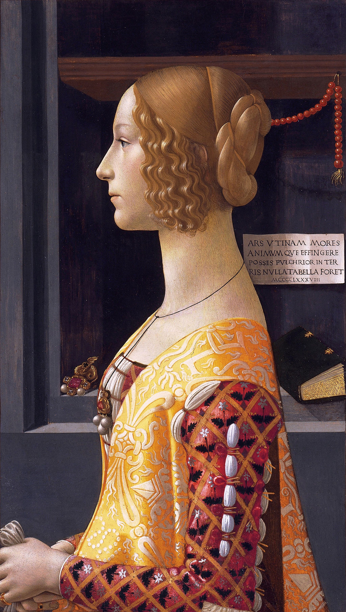

<head>
<meta charset="UTF-8" />
<meta name="keywords" content="drawing, painting" />
<meta name="description" content="drawings by Sunjy" />
<title>Sunjy</title>
<link rel="shortcut icon" type="image/x-icon" href="../../mImages/mCommon/favicon.ico" media="screen" />
<link rel="stylesheet" type="text/css" href="../../mCsses/mCommon/mCssA.css" />
<link rel="stylesheet" type="text/css" href="../../mCsses/mCommon/mCssB.css" />
<link rel="stylesheet" type="text/css" href="../../mCsses/mCommon/mCssC.css" />
<link rel="stylesheet" type="text/css" href="../../mCsses/mCommon/mCssD.css" />
<link rel="stylesheet" type="text/css" href="../../mCsses/mContent/mCssA.css" />
<link rel="stylesheet" type="text/css" href="../../mCsses/mContent/mCssB.css" />
<link rel="stylesheet" type="text/css" href="../../mCsses/mContent/mCssC.css" />
<link rel="stylesheet" type="text/css" href="../../mCsses/mContent/mCssD.css" />
</head>
<script type="text/javascript" src="../../mScripts/mContent/mContentAA.js" /></script>
<script type="text/javascript" src="../../mScripts/mContent/mContentAB.js" /></script>
<script type="text/javascript" src="../../mScripts/mContent/mContentAC.js" /></script>
<script type="text/javascript" src="../../mScripts/mContent/mContentAD.js" /></script>
<script type="text/javascript"></script> 
<script type="text/javascript">
document.write('<div class="mImgAbsolute"></div>');
/*
document.write('<p class="mFontSizeBColor" />From a white paper...</p>');
document.write('<table class="center"><tr><td>');
document.write('');
document.write('</td></tr></table>');
*/
</script>


<script type="text/javascript">
document.write('<p class="mFontSizeBColor" />Portrait of Giovanna Tornabuoni</p>');
document.write('<p class="mFontSizeSColor" />“Portrait of Giovanna Tornabuoni” by Domenico Ghirlandaio portrays Giovanna degli Albizzi, a Florentine noblewoman. She died in childbirth, giving birth to her second child in 1488, and this painting was painted after her death.<br><br>Her husband, Lorenzo Tornabuoni, was deeply stricken by grief and commissioned this portrait of his wife to commemorate and honor her memory.<br><br>This panel is a powerful example of the late 1400’s Florentine portraiture. Giovanna has been identified as the subject of this portrait, thanks to her other named portraits, where she has the same hairstyle.<br><br>There is also a medallion showing her likeness and her name.  Giovanna is depicted in a traditional profile pose, which was favored due to its association with ancient coins and medallions.<br><br>The portrait followed the classical style of the period when the body proportions were idealized, and the faces conveyed character without expression.<br><br>Giovanna is shown wearing a richly embroidered dress and, in the background, is a selection of her personal belongings, a hanging coral rosary, and a prayers book.<br><br>The Latin inscription, taken from an epigram by the 1st century AD poet Martial and the Roman numerals represent the date of his death. The English translation is:<br><br>“Would that you Art, could portray her character and spirit; for then, there would be no fairer painting in the world.”<br></p>');
document.write('<table class="center" /><tr><td>');
document.write('<br>Her husband, Lorenzo Tornabuoni, was deeply stricken by grief and commissioned this portrait of his wife to commemorate and honor her memory.<br><br>This panel is a powerful example of the late 1400’s Florentine portraiture. Giovanna has been identified as the subject of this portrait, thanks to her other named portraits, where she has the same hairstyle.<br><br>There is also a medallion showing her likeness and her name.  Giovanna is depicted in a traditional profile pose, which was favored due to its association with ancient coins and medallions.<br><br>The portrait followed the classical style of the period when the body proportions were idealized, and the faces conveyed character without expression.<br><br>Giovanna is shown wearing a richly embroidered dress and, in the background, is a selection of her personal belongings, a hanging coral rosary, and a prayers book.<br><br>The Latin inscription, taken from an epigram by the 1st century AD poet Martial and the Roman numerals represent the date of his death. The English translation is:<br><br>“Would that you Art, could portray her character and spirit; for then, there would be no fairer painting in the world.”<br>" />');
document.write('</td></tr></table>');
</script>


